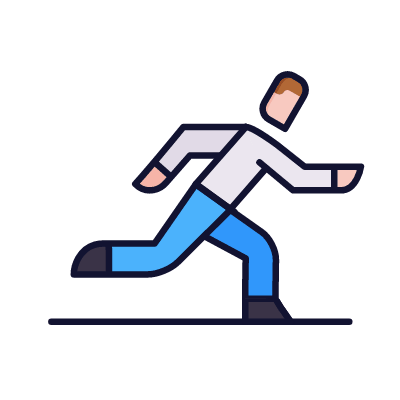

Running
Improves Cardiovascular Health:
Running strengthens your heart, lowers blood pressure, and helps improve blood circulation, reducing the risk of heart disease.
Boosts Mental Health:
Running releases endorphins, which can reduce stress, anxiety, and depression, promoting a positive mood and better mental clarity.
Enhances Physical Fitness:
Regular running builds endurance, increases muscle tone, and helps with weight management by burning calories and improving metabolism.

MY DIARY
Emotional Venting:
Writing thoughts and feelings in a diary provides a safe outlet to release bottled-up emotions, reducing emotional burden and mental clutter.
Self-Reflection & Clarity:
It helps you understand your thoughts, recognize patterns in mood or behavior, and gain clarity on what triggers sadness or stress.
Tracking Progress & Positivity:
Documenting small wins, happy moments, or gratitude entries can shift focus toward the positive, helping build a hopeful mindset over time.
Yoga and Meditation
Improves Flexibility & Strength:
Yoga enhances physical strength, balance, and flexibility through various postures and stretches.
Reduces Stress & Anxiety:
It promotes mental relaxation through deep breathing and mindfulness, helping to calm the nervous system.
Boosts Overall Health:
Regular yoga practice can improve posture, digestion, sleep quality, and immunity, supporting overall well-being.
Conversations from the Heart
Emotional Support & Validation:
Sharing feelings with someone you trust can provide comfort, understanding, and a sense of being heard, which eases emotional pain.
Reduces Feelings of Isolation:
Regular conversations help combat loneliness, making you feel connected and less alone in your struggles.
Gain Perspective & Encouragement:
A trusted person can offer helpful advice, a fresh perspective, or simply remind you of your strengths and worth during tough times.